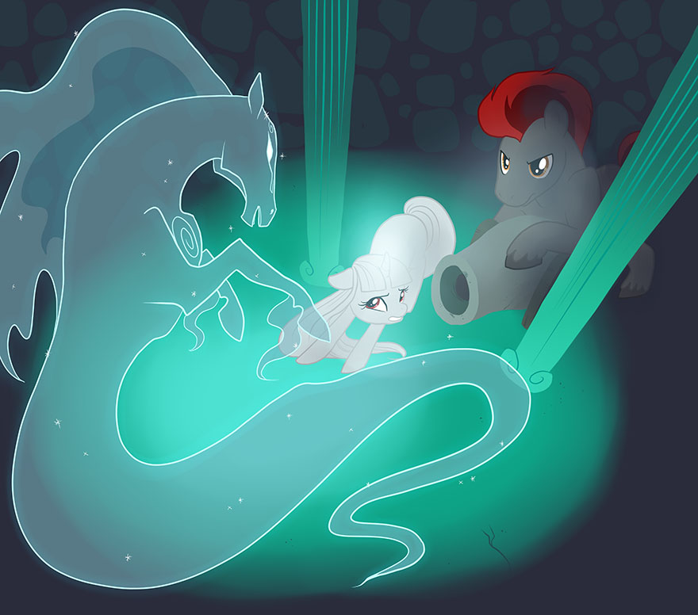

Premade Episodes
Premade Episode Overview
This chapter contains three premade Episodes which are ready to play; a CMC-style Episode, a Slice Of Life-style Episode, and an Adventure-style Episode. These premade Episodes serve two purposes: first, they can provide content for a game group and help a new group get into the style of S3E. Secondly, they are written in different styles with different emphasis between them, to show not only that creating an Episode for S3E can be done in several ways according to your personal tastes, but also that given Episodes can have very different themes and structures of organization and still work.
Frights and Nightmare Nights
A Cutie Mark Crusader-style Episode suitable for beginner players and characters of Youth tier. Created and written by Emerald Dusk.
The Intro
"It’s Nightmare Night in Ponyville! The full moon rises ominously in the sky as you all meet outside Sugar Cube Corner. Ponies in all manner of costumes pass on by, as other groups of foals travel from house to house, collecting candy. Several games have been set up in the town square. Some groups of ponies head into the Everfree Forest, where Zecora the Zebra has been telling a new version of the tale of Nightmare Moon."
At this point, the PCs are free to decide exactly what they want to do. Friendly neighbors hand out candy at houses, and the PCs are encouraged to get some candy that they can leave as an offering to Nightmare Moon later on. In the square, several games and events are set up.
The Village Square
"The square is filled with events set up for Nightmare Night. The air is filled with dance music, played by a live band on a stage set up to one side of the square. Filling the rest of the square are several games being run by Applejack, who is currently dressed as a pumpkin. Over by the band, a sign advertises a dance contest, set to be starting soon."
The games available to play are the Spider Toss (a Throwing Task, Difficulty 10 to hit the web), Pumpkin Chunkin' (an Artillery Task, Difficulty 10 to work out the angle on the catapult) and Bobbing for Apples, (no roll needed, as the player gets an apple eventually.) If the PCs win at any of the games, they receive a bit of extra candy from Applejack.
The Dance Contest
If the PCs choose to participate in the dance contest, they find themselves competing against a few other ponies in groups of three. The contest itself is an opposed Dancing Task (choose the participant with the highest Heart, with the other two contributing a Harmony bonus), with the highest group winning the contest. Feel free to give out extra bonuses to the group if they give a good description of their performance. The other two teams have an effective Dancing score of +5 and +7, including Harmony bonuses. The group sizes, and consequently the scores, may be altered to accommodate larger or smaller parties. Each member of the winning team is given a shiny gold medal for the contest.
Rainbow Dash
Flying around the town square is Rainbow Dash, dressed as a Changeling, who is playing pranks and scaring ponies, as usual for Nightmare Night. If Dash sneaks up on the PCs, she'll attempt to scare them. Have the players make a Discipline roll against Dash's Thunderclap. (Difficulty 12). On a success, the character is slightly startled by the loud noise, but otherwise unaffected. On a failure, the character is scared by the thunder, and loses 1d6 points of Willpower.
Scared Friends
At some point while the players are enjoying the different events during the night, several scared ponies, classmates of theirs from school, run up to them.
"A monster!"
"A ghost!"
"A ghost of a monster!"
The foals tell the PCs about a monster of some kind lurking in the Everfree Forest. When asked about the monster, the first will reply "It was a manticore!" to which the second will reply "No, it was a medusa!" The third chiming in "You're both wrong, it was a chimera!" All three of them are right, and wrong. For more information, see "The Monster" below. Right now, the goal is to set the scene for the encounter with the monster later on.
Zecora, the Everfree Forest, and the Mantichimera
Eventually, whether to investigate the monster or to visit Zecora, the party will want to travel to the Everfree Forest. Pinkie Pie, dressed again as a chicken, is guiding a group of foals through the group, or the party can choose to go by themselves.
The Monster: About halfway down the path from Ponyville to the statue of Nightmare Moon, the group is attacked by a strange and terrible creature.
"A terrible monster jumps out of the bushes, surrounded in a strange, green smoke. The beast has the body of a lion, with a scorpion's tail, much like a manticore. Unlike a manticore, however, the lion's mane is made up of a writhing mass of snakes. Additionally, two other heads, a goat and a dragon head, spring out from either side of the lion's head. As it emerges, all three heads give off a fearsome roar!"
The party must make a Discipline check to resist the monster's roar. If traveling with Pinkie and her group, Pinkie and the other foals traveling with her will flee immediately. The chaos and confusion add to the fright (Difficulty 13). On a failed roll, a character takes 3d6 Willpower damage, and still takes half even on a successful roll.
After the initial shock, the party has a chance to strike back against the monster, aid others in the group who may have been sidelined by the monster's roar, or any other task they feel is appropriate. On its turn, the monster will try to frighten the party, growing more fierce each round for three rounds or so, at which point it will vanish. The beast itself is an illusion, caused by a young Unicorn colt named Spooky Shivers hiding in the bushes, and any physical interaction with it will dispel it. Should the party avoid being routed for three rounds, or dispel the monster, Spooky will retreat back into the forest to avoid being found. Where the story progresses from here depends on how the party did fighting the monster.
Routed: If the entire party's Willpower was Sidelined by the monster, they drop everything they were holding, including their candy, and flee back into town. Back in the town square, the group has the opportunity to rest and regain a bit of Willpower from their ordeal, and make a new plan. If the group is stuck, offer Rainbow Dash's assistance:
"Hey, squirts. You guys look pretty shocked, even for Nightmare Night. You see a ghost, or something?"
Dash eventually agrees to come along with the party back to where they found the monster. In the clearing, they find that all their candy is gone, and can investigate the scene.
Victory: Should the monster be dispelled, whether by Spooky retreating or physical interaction, the party is free to do a few things. First off, if the group doesn't investigate the cause of the monster, and simply goes on claiming they defeated it, soon enough new reports of the monster returning to terrorize ponies start coming up, putting the party back on square one. The party can investigate the area, and a good check (Investigation Difficulty 10) will uncover hoofprints in the mud off the beaten path, as well as a trail of candy leading through the forest. Following this trail leads to Spooky's cave.
Zecora: If the monster is defeated, the party can ask Zecora for help. When the monster is described to her, Zecora is skeptical. She claims she has never seen a monster quite like that before, and chalks it up to childish imagination (which, to be fair, it is). Given a bit of convincing (Persuasion Difficulty 13), Zecora will admit that perhaps the monster is something she just hasn't seen. If the green smoke, or the monster's sudden disappearance is mentioned, however, Zecora is a bit more keen on the situation. She shows the party an illusion of Nightmare Moon, using her own magic, which carries the same strange green smoke. She tells the PCs that the monster is an illusion, which means that somewhere nearby, there must be an illusionist.
Spooky's Cave: After following the trail of candy, the party reaches a cave on the other side of a small ravine. Getting across the ravine is a relatively simple task, resolved in whatever way the PCs see fit (jumping, making a log bridge, vine swing, etc.)
"As you approach the cave, you are startled by the sudden rush of bats fluttering out of the mouth of the cave. Peering in, you see only darkness, even with the light of the full moon shining down into the maw of the earth in front of you."
The darkness in the cave is magical, to mask Spooky's lair from anyone who comes snooping around. When Spooky hears the party coming through the cave, he hides behind some rocks and conjures up another illusion to try and scare the party from the darkness. Just like Spooky's other illusions, however, this one can be dispelled by physical interaction, and if the party was able to defeat the first illusion, they receive a bonus die, as if they had an appropriate Tool, on their Discipline rolls to resist fear. Once the party makes their way through the darkness, they are met with the following sight:
"The darkness gives way suddenly to the light of a small lantern perched upon a rock. Scattered around the cave are several bags of candy, much more than a single pony could eat. Two books, "Creatures of the Everfree Forest" and "Old Mares' Tales: Scary Stories to Tell by the Light of the Moon" sit open by the lantern.
This area is Spooky's lair, where he set up shop to hoard the candy he had been collecting from all the ponies he had scared on the road. Should the party make it this far, Spooky realizes that the jig is up, and surrenders. He explains himself, and the party is free to take Spooky, and the candy back and return it to its rightful owners.
Spooky's Story
A week or so ago, Spooky Shivers discovered his Cutie Mark, a ghost representing his skill in scaring ponies. One day, he plans to become a famous horror movie director in Applewood, but until then, there's Nightmare Night, and all the candy that comes with it.
Spooky realized that he could use his talent on Nightmare Night to get huge amounts of candy by scaring it off of all the other foals. Setting up shop on the path to Nightmare Moon's statue, a path he knew would be busy with foals taking candy offerings, Spooky conjured up his illusions whenever a group walked by with candy, and once they had run off, took the candy back to this cave to hide.
Zecora's Tale
Gather round, children, and learn of a tale
Of how even the mightiest sometimes can fail.
Long ago, the princess of the moon,
Decided to play by her own tune.
Banished was she for one thousand years
A millennium filled with her rage and her tears.
When she returned from her banishment once centuries past
She found that the customs had changed, and changed fast.
She'd become a figure of fear and derision
And so she decided to make a revision.
She took up some fangs, and illusions and more,
To set about scaring ponies who stepped out their door.
So beware, for fair Luna yet lurks in the night
To fill you with fear on this dark Nightmare Night.
Rodeo and Lariette
A Slice Of Life-style Episode suitable for intermediate players and characters of Adult tier. Created and written by Emerald Dusk.
The Intro
“The normally urbane city of Canterlot bustles with country flair as cowponies from all over Equestria arrive for the Equestrian Rodeo Competition. The high class fashions the city is usually known for have been swapped out for Stetsons and leather boots. For your own reasons, you have found your way to Canterlot Coliseum, the center of the chaotic country western show.
The Coliseum is filled with ponies, all working on various tasks to prepare for the coming championship. A line has already formed at the registration booth just outside the stadium’s entrance, and several food carts are set up around the walkway leading in, each selling different, but uniformly delicious-looking, fare.”
Each of the PCs should have some reason for attending the competition; selling goods or food at the event, watching a friend or family member compete, competing themselves in the competition, or just being there to spectate are all viable reasons, as well as any other logical explanation.
As soon as the group arrives at the gates, the immediate things to do are to visit the various stalls set up in the plaza and sign up for the Rodeo.
The Stalls
The plaza outside the Coliseum is loaded down with stalls selling different items and equipments. Quality ropes, spurs, and other tools for wrangling are available at one, delicious foodstuffs are available at several others, from apples to cherries to pies to fritters and an almost uncountable amount of other food stalls. From one stall, a set of shrill young voices cry out for customers.
CMC Food Cart Sellers!
Should the party investigate the voices, they will quickly discover that the CMC have set up shop in the Apple family’s stall, trying to sell a host of different apple-related dishes. If pressed on why they are running the shop, as opposed to anyone else, Apple Bloom cheerfully explains that AJ is off on some important business for the Princess (if AJ isn’t one of the PCs, that is), and that Big Mac is competing in the Championship in her place/alongside her. With Granny unable to make the train ride to Canterlot, that leaves Applebloom and her friends to work the stall.
The CMC can be a valuable ally to parties who ask for their help. The three will travel around the Rodeo in shifts, performing whatever minor tasks the group asks them to do, usually yelling some variation of “CUTIE MARK CRUSADERS WHATEVER OUR JOB IS!” before running off. The CMC will succeed at any mundane, easy task, but asking anything complicated or specific of them, such as setting a trap, will most likely fail in a humorous way—somehow involving tree sap.
The Mountagues and the Canterlets
After the party has had some time to acquaint themselves with the Rodeo Grounds, the party hears several loud, angry voices, and notice a small crowd gathering around the registration booth. At the center of the crowd, the party finds the source of the yelling; two families, one of Earth Ponies, one of Unicorns. Face to face between the two families (the Mountagues and the Canterlets), heads nearly locked, are two middle aged stallions seemingly leading the argument.
“Our family’s business is precisely as legitimate as yours!” The Unicorn stallion yells.
“Please. You highfalutin’ Unicorn fancies don’t know anythin’ about real ranchin.” The Earth Pony stallion replies.
The two families keep arguing until they are broken up by either the PCs, or Calamity Mane. Calamity is running the Rodeo this year, and is in no mood to deal with the feuding families. Both the Mountagues and the Canterlets sulk off shortly after. (A DC 20 Observation check notes that two young ponies, a colt among the Mountagues, and a filly with the Canterlets, seem a bit less enthused about the fight as the others of their family). Calamity can answer any questions the PCs might have about the two families, as well as the Rodeo in general.
Who were those ponies? “Those families were the Mountagues and the Canterlets, also known as the biggest pain in mah flank since I started runnin’ this competition. See, the Canterlets come from a pretty well-to-do family here in Canterlot, and they raise sheep and the like for high quality fabric to sell in the city. The Mountagues, on the other hand, see this as some sort of insult to the Earth Pony Way of doin’ things, and ain’t exactly happy with some Unicorns comin’ in and competin’ against ‘em with magic.
What about the foals? “Well, the colt’s Rodeo, the Mountagues’ youngest. It’s his first year competin’ in the Championship. As for the filly, that’s Lariette, the Canterlets’ youngest. Magic or no, she’s the one to watch when it comes to a rope.
What are the rules of the Rodeo? “The Championship is goin’ te be run over the next three days, with three events each day. Whoever’s got the most blue ribbons after the three days’ events will be crowned Equestria Rodeo Champeen. Easy as fallin’ off a log.”
What sort of events can we expect? “Well, I can’t give too much away, but there’ll be the usual; Bull Ridin’, ropin’, racin’, as well as a few other special events.
The First Day’s Events
That afternoon, the first day of the Rodeo events begins with the Hurdles, the Hay Throw, and the Wrangling Competition. Participating in the tournament, other than any PC who wishes to join, are:
-Rodeo Mountague
-Lariette Canterlet
-Big Macintosh (if not a PC)
-“Wild” Bull Hickok
-Sawdust
-Brawny Boulder
-Cherry Cobbler
Their modifers for each event will be listed at the bottom of the event, although GMs are encouraged to modify these numbers or add new contestants as they see fit.
Hurdles
The outer edge of the Coliseum is lined with hurdles and small ditches. The contestants line up at a starting line, where Calamity Mane stands with a large bell. “Three Laps around!” Calamity shouts into a loudspeaker as the contestants finish lining up. “Five second penalty for each hurdle missed! That clear? Good. Three! Two! One! GO!”
Each lap of the race requires two Athletics checks, one flat Leaping roll of 15 to clear the hurdles successfully, and one competitive Running roll against the other contestants to determine who is in the lead. If a contestant doesn’t clear the hurdles, the penalty sets them back 1 point from their final lap score for each number under the DC 15 required to clear the hurdles. (For example, Big Macintosh rolls only a 12 on his Athletics check to clear the hurdles, and a 17 on his Athletics check for the lap. Meanwhile, Rodeo rolls a 16 on his roll to clear the hurdles, but only a 14 for the lap. Big Mac’s penalties, however, bring his speed down to 14, neck and neck with Rodeo.)
Rodeo: +5 Leaping, +6 Running
Lariette: +6 Leaping, +5 Running
Big Macintosh: +4 Leaping, +7 Running
“Wild” Bull Hickok: +3 Leaping, +8 Running
Sawdust: +4 Leaping, +5 Running
Brawny Boulder: +5 Leaping, +6 Running
Cherry Cobbler: +6 Leaping, +5 Running
Hay Throw
Several tightly bound bales of hay line the edge of the center field, on the edge of a ruled line. “Each contestant gets two throws!” Jane shouts into her loudspeaker. “Furthest throw wins the gold!”
The Hay Throw is probably the most straightforward contest in the Championship, but also one of the ones most likely to start a fight. Each contestant gets two chances to throw the hay bale as far as they can, using a competitive Throwing check. Lariette, however, takes a different approach: using her control over ropes, Lariette uses her magic to telekinetically throw her bales, (adding her Talented racial trait into her throwing scores.) This use of magic, in the Mountague’s eyes at least, constitutes cheating, and the family will raise a massive fuss after the event is completed, especially if Lariette wins.
Rodeo: +6 Throwing
Lariette: +10 Spellcasting
Big Macintosh: +7 Throwing
“Wild” Bull Hickok: +6 Throwing
Sawdust: +5 Throwing
Brawny Boulder: +6 Throwing
Cherry Cobbler: +5 Throwing
Bull Riding
As the sun begins to set on the first day of the competition, the coliseum has been converted into an arena. The marking lines from the Hay Throw have been stripped away, and a powerful-looking bull waits in a small corral made out of one of the arena’s entrances. Calamity sits in an observation box on the edge of the arena, speaking once more into her loudspeaker. “Whoever can keep themselves on ol’ Durham there longest without gettin’ bucked wins the gold!”
Each round, Durham’s bucking gets more intense, hoping to knock off each contestant. For every three seconds on the bull, the rider must make either a Balance check or a Riding check in order to stay on his back. On the first check, the DC is 12. Every three seconds, the DC increases by 1 until the rider is unseated. If two or more contestants last until the same round, the highest result denotes closer times. (For example, Rodeo and Big Mac both last 4 rounds against Durham. Rodeo’s last Riding check was a 17, while Big Mac’s last Balance check was a 15. The end result was that Rodeo stayed on for 13 seconds, while Big Mac stayed on for 12 seconds).
Rodeo: +8 Balance / Riding
Lariette: +8 Balance / Riding
Big Macintosh: +6 Balance / Riding
“Wild” Bull Hickok: +6 Balance / Riding
Sawdust: +8 Balance / Riding
Brawny Boulder: +7 Balance / Riding
Cherry Cobbler: +7 Balance / Riding
After the First Day’s Events
Almost immediately after the first day’s events end, another ruckus breaks out between the Mountagues and the Canterlets. While the families are arguing about Lariette’s use of magic during the Hay Throw, have the PCs make an Observation check at Difficulty 18. If successful, the PC notices a bit of nonverbal communication from Lariette to Rodeo. At Non-Verbal Difficulty 23, the PC picks up the gist of it: “Meet me tonight in the Coliseum basement.”
The First Night
Allow the PCs some free time to do whatever they please after the first day of the competition. At some point during the night, however, A DC 14 Observation check notices Rodeo sneaking off during the night. If Rodeo is confronted, he’ll make some minor excuse, going to the outhouse, getting a drink, etc, and scurry off. If followed, Rodeo heads to the basement of the Coliseum, once he’s sure no one is following him. Waiting for him there is Lariette, eager to see him again. As long as the PCs don’t make themselves known, the pair spend about an hour being together, complementing each other on their performances during the competition, being lovey-dovey, etc, before splitting up with a kiss and returning to their families’ camps. If confronted when together, Rodeo looks panickedly at the PCs and begs them not to tell their parents. The pair explains their situation and once again pleads for secrecy.
The Lover’s Story
The Mountagues and the Canterlets have been feuding for generations, and so the young Rodeo and Lariette had been meeting in secret for the last several years. They met at the Championship about 5 years ago as a complete accident. Both had been playing under the bleachers of the arena, down in the basements, when they met. Each year since, while their families fought in the coliseum above, the pair would meet each night in the basement to spend time with their forbidden friend. Eventually, romance blossomed between the two. (Something about the forbidden nature of the relationship, mixed with a hint of teenage rebellion, they think—although Rodeo quickly amends his answer to include Lariette’s beauty and wit.) The pair now find themselves in a tricky situation. They would love to get married, with Rodeo living on the Canterlet’s ranch as a cowpony. Their families, however, would never allow that. The Mountagues would never accept their son living with their hated enemies, the Canterlets would never let an “enemy agent” live on their property, and both families would balk at the concept of marriage. As it stands, the mere mention of the lovers’ plight to their parents would be tantamount to a declaration of war.
What the PCs intend to do with this information is up to them, although as the lovers point out, their families would riot in the streets if the lovers’ secret was exposed. The best course of action would be to sit on the information until an opportunity presents itself.
The Second Day’s Events: Roping
As soon as the morning’s competitions start, the first event, the Roping competition, is already set up. Three moving targets are set up in increasing distances from the start line, at increasing intervals. Each contestant, Calamity explains through her bullhorn, will receive two attempts to rope each target. The closest target is worth 1 point (DC 10), the middle target is worth 3 points (DC 15), and the farthest target is worth 5 (DC 20).
Rodeo: +5 Rope Tricks
Lariette: +16 Spellcasting
Big Macintosh: +7 Rope Tricks
“Wild” Bull Hickok: +6 Rope Tricks
Sawdust: +5 Rope Tricks
Brawny Boulder: +3 Rope Tricks
Cherry Cobbler: +6 Rope Tricks
If Lariette wins the contest, (which she likely will, given her gift with ropes), the Mountagues will nearly rebel at the prospect of Unicorn magic being used to “cheat” in the contest. Lariette will offer to do the event without use of magic (which will reduce her bonus to +7, without the aid of her Talented racial ability—still enough to be more than competent.) Regardless of the outcome of the scuffle, both families will be on edge for the rest of the day, a situation which can quickly escalate if the PCs don’t act.
Hoof Wrestling
At the beginning of the second event of the day, each contestant is lined up on either side of a long table in the middle of the Coliseum grounds for the Hoof Wrestling competition. The rules, from a mechanics perspective, are simple: both contestants make opposed Weightlifting rolls until one wins three times. The winner goes on to face the next pony in the bracket.
Bracket A
Rodeo: Weightlifting +2 versus Lariette: Weightlifting +4 (Lariette will win this match)
Big Mac: Weightlifting +8 versus Wild Bull: Weightlifting +9
Bracket B
Sawdust: Weightlifting +5 versus Brawny Boulder: Weightlifting +6
Cherry Cobbler: Weightlifting +4 versus The PC: Weightlifting (+X)
If more than one PC is competing, arrange extra matches or buys as needed. Either way, notice that Rodeo and Lariette must face each other, and Lariette will win. Perceptive PCs will note that Rodeo looks distracted by his choice in opponent, and his family sees it as well. After their match, the Mountagues will begin complaining again that the “Canterlet floozy” is trying to seduce their son.
Pie Eating
The third event of the day is the pie eating contest, which never truly gets underway. Calamity yells into her microphone at the start of the match:
“A Champeen’s gotta have a steady eye, a straight shot, and a strong hoof. But that doesn’t mean they can’t pack away the pie, too! Whoever eats the most pies in 15 minutes, wins! And of course, no hooves! Or horns!”
The PCs note that both Rodeo and Lariette are missing during the event, and that the pair’s fathers have taken their places. The contest, as scheduled, would be determined by a series of three Gourmet checks, with every 10 points of the total roll representing one full pie. However, the contest never reaches its conclusion. About 5 minutes into the competition (after the first roll is made,) the contest is thrown into shambles. Either Mountague or Canterlet, whoever is further behind at the moment, makes an impulsive decision, and throws one of the cherry pies at the other. The other angry stallion returns fire, tables are flipped, more contestants get involved, and the conflict escalates to a full-scale pie fight if the PCs don’t intervene (that said, they may not want to stop the commotion… hint-hint, if anyone’s playing Pinkie Pie…).
After about 3 rounds of fighting, Calamity Mane steps out onto the field, trying to calm the scene, and promptly getting hit with pies from both sides. When the pies run out one round later, Calamity is furious, ejecting both Mountague and Canterlet from the competition, and allowing only Rodeo and Lariette to compete in the final days’ events. Any more funny business from either side, and both families are banned from the Championship forever.
Mountague: +2 Gourmet
Canterlet: +2 Gourmet
Big Macintosh: +3 Gourmet
“Wild” Bull Hickok: +3 Gourmet
Sawdust: +5 Gourmet
Brawny Boulder: +2 Gourmet
Cherry Cobbler: +7 Gourmet
The Second Night
The second night is largely a time for PC investigation, setting up the events of the next day, and an attempt for the PCs to learn enough information to avert tragedy. Listed here are all the events that happen on the second night that PCs might stumble across during their downtime:
Grounded Lovebirds
Both Rodeo and Lariette have been completely forbidden from wandering the fairgrounds that night, which leads to an argument between Lariette and her father regarding the place of a young filly in her family, and a young mare’s place in the world at large. Rodeo however is more reserved, as he sits plaintively by his family’s campfire. If he spots one of the PCs, he surreptitiously calls one of them over, (preferably a PC who was caught in the crossfire during the pie fight earlier). Under the pretense of apologising for his family’s behavior in the arena, he hands the PC a letter marked for Lariette with a pleading glance.
Rodeo’s Letter
My dearest Lariette,
I can’t stand the pressure of this anymore; the constant fighting, the constant pressure of keeping our love a secret. Please, for the good of us both, let us end this feud tomorrow. After the Championship is over, once we get a free moment, let us ensure that, regardless who wins the tournament, we win the day. Run away with me, Lariette. Leave behind all this senseless fighting. I have enough stashed away to get us to Hollow Shades, and my friend Marecutio can help us out from there. Meet me at the train station at dusk, and we’ll seek our own destinies, rather than being tied to one of pointless fighting.
Your beloved,
Rodeo
What the PCs do with this letter is ultimately up to them, although delivering the letter to Lariette is the ideal choice. Alternatively, the letter could be used to leverage either the Mountagues or the Canterlets. It’s a Daunting Challenge to get either family to budge, although the letter counts as an Appropriate Tool for any checks made to convince the families to stop fighting, at least in regard to their children, with one caveat: if the letter is used on a failed check, the resulting failure will count as a Critical Failure, regardless of what was actually rolled. Both families are furious with the prospect of their child eloping with the enemy, and furious at the PCs for interloping. The family refuses to speak further with the PCs (and may destroy the letter, if they get their hooves on it).
The Mountague’s Plot
Perceptive PCs might notice Mountague sneaking around with another colt, who the PCs may know as Tybit, during the evening. The pair make their way to the Coliseum basement, where, after making sure they weren’t followed, begin to plot. Mountague gives Tybit a small box filled with rubber snakes, as well as a large bag of bits. Tybit is instructed to set the box above the bullpen before the Wrangling competition the next morning. When the gate is opened for Lariette to compete, the snakes will fall from the ceiling, the box connected by string to the gate, and the panicked cattle will stampede, creating a situation that Lariette won’t be able to handle. What the PCs do with this info is, like the letter, up to them. They now sit on a reasonable pile of information, and have the initiative. If confronted, the Mountagues will deny everything, and their relationship with the PCs will degrade. If the plot is brought to Calamity Mane’s attention, she will be worried, but without proof, there is nothing she can do. She does offer to search the bullpen in the morning (which will reveal nothing as Tybit plans on installing the trap while leading the cows in before the event starts) and suggest adjusting the roster so that Rodeo or a competing PC is up first. If presented with evidence, Calamity is livid. Not only does she cancel the last days events, but calls attention to the plot during the morning ceremonies, which has its own consequences. Lastly, the PCs can try and solve the problem themselves and hope that they can avert crisis before it strikes the next morning.
The Final Days’ Events
The final day of the competition can vary quite a bit with what the PCs have learned over the last two days. At the very least, it should be obvious by now to any party that the families are feuding, and that young Rodeo and Lariette are getting caught in the crossfire. What they may or may not know is exactly how Rodeo and Lariette plan to run away, or the Mountague’s plan to humiliate and/or injure Lariette. As such, there are a great many things that could change how the events of the final day play out. As such, this section will detail what happens on the third day without any intervention from the PCs, with sidebars where the PC’s meddling could have changed events for the better (or worse).
Wrangling
The first day’s events start bright and early with the Wrangling competition. Unfortunately, it will also be the last event of the day. Lariette is slated to compete first, and she takes her place on the field. Meanwhile, that morning, while the cows were being herded into the bullpen for the event, Tybit set up a small trap in the bullpen’s gate. When the gate is opened, a box of rubber snakes will fall from the ceiling above the gate, frightening the cows into a stampede. Normally, the Wrangling contest would, mechanically, be a simple test of three Rope Tricks or Command rolls, with the winner being the contestant with the highest total. The stampede rampaging through the arena however, will be out of Lariette’s control. Within 2 rounds of actions, Lariette is Sidelined from the damage she takes trying to control the stampede. One round after the stampede begins, Rodeo will wrestle free of his family’s grip and jump onto the field to help Lariette, and be Sidelined one round after she is.
Rodeo: +11 Rope Tricks / Command
Lariette: +9 Rope Tricks / Command
Big Macintosh: +10 Rope Tricks / Command
“Wild” Bull Hickok: +9 Rope Tricks / Command
Sawdust: +7 Rope Tricks / Command
Brawny Boulder: +8 Rope Tricks / Command
Cherry Cobbler: +7 Rope Tricks / Command
The Aftermath
When the dust settles, if nothing was done to avert disaster, both of the lovers will be sidelined. Neither have suffered the ultimate grim fate, but both are badly injured. At this point, the Rodeo is called off, and any chances of repairing the relationship between the families is next to nil. A skilled speaker may still yet be able to reconcile the families, citing the devotion their children had for each other, but at this point, it will be a herculean task to accomplish.
The Third Day’s Events
As written, the third day of the rodeo is upended by the Mountague’s plot, but should the party avert disaster, some groups may still be interested in seeing who wins the Championship. The two remaining events of the day, the Barrel Weave and the Bronco Buck, can still be held if the families are brought together peacefully.
The Barrel Weave
Several barrels are lined up in the center of the arena, with a racing line on either end. “Fastest time around all the barrels and back wins, with a 5 second penalty for any barrels hit!” Calamity calls into her bullhorn.
The Barrel Weave is a pretty simple test, run pretty much identically to the Hurdles competition, with two exceptions. First, there are only two “laps” of the race, one to the end of the row of barrels, and one back. Second, instead of making a DC 15 Leaping check to clear hurdles, the contestants must make another DC 15 Running check to successfully clear the slalom, (making effectively a total of four Running checks for each contestant: two for speed, two for accuracy).
Rodeo: +6 Running
Lariette: +5 Running
Big Macintosh: +7 Running
“Wild” Bull Hickok: +8 Running
Sawdust: +5 Running
Brawny Boulder: +6 Running
Cherry Cobbler: +5 Running
Bronco Buck
A young dragon looks brazenly at the contestants as he walks out onto the field led by Calamity Mane. “This here’s Blaze, and he’s here to test yer skills at buckin’ him off! Shortest time to unhorse this little guy wins the match, but careful, he’s a wily one!
Blaze has a Balance score of +10, and makes opposed checks against each contestant’s Martial Arts, or any other skill a PC thinks is appropriate for removing an unwanted rider (GM’s discretion). Each unsuccessful attempt to unseat Blaze counts as three seconds of in-game time. Whoever’s time is lowest (highest roll in case of a tie, just like the Bull Riding competition) is the winner.
Rodeo: +7 Balance / Martial Arts
Lariette: +5 Balance / Martial Arts
Big Macintosh: +10 Balance / Martial Arts
“Wild” Bull Hickok: +11 Balance / Martial Arts
Sawdust: +8 Balance / Martial Arts
Brawny Boulder: +7 Balance / Martial Arts
Cherry Cobbler: +7 Balance / Martial Arts
The Myth of Marelantis
An Adventure-style Episode suitable for experienced players and characters of Veteran tier or higher. Created and written by Serious Business.
Adventure Background
Windsoar was a flying fortress-city back in the time before Equestria. It was a strategic location, for it floated right over the Equestrian Ocean, unassailable by any Earth Pony army or the magical might of the Unicorns. The city was Commander Hurricane’s home and base of operation. After the events of “Hearth’s Warming Eve,” the Windigoes vanished and the warmth finally returned to Equestria. This change in climate proved fatal for the city, as the returning warm winds met the old cold winds and transformed to a horrific water tornado. The Maelstrom tore Windsoar down from the heavens and sunk it underwater. The pegasi all escaped the catastrophe and soon began their new lives in the united land of Equestria, but the city was lost, along with many secrets still trapped within.
Thousands of years later, a young filly named Dinky Doo wrote a letter to the Seaponies and wanted her mom, a mailmare, to deliver it. Hearing tales of the Seaponies herself, and the mystical lost city of Marelantis, Dizty Doo set off to fulfill her daughter’s wish. During her adventure, Ditzy scattered various clues to where she had gone, but none of them revealed her identity (more so, they make it look like it was Daring Doo and not Ditzy Doo to the players).
First, Ditzy got a Waterbreathing spell that works for 24 hours. Then, following a series of ancient clues, Ditzy found her way to Marelantis and got inside. However, after the spell ended, Ditzy was trapped inside the sunken city, in a closed room whose air supply would shortly be used up.
Cast
Jacques Hoofsteau - An old Earth Pony sailor who chased legends and myths when he was younger. Sadly, he never made any breakthrough, and the legends remained legends.
Ditzy Doo - A mailmare that works for the Equestrian Post Service. While a little bit silly, and often forgetful, she is a caring mother and would do everything just to make her daughter happy. At the beginning of the adventure, she has been missing for about a day.
Past Endeavour - The keeper of the Museum of Pony History. Always sad that all the ponies are more interested in magically moving wax figures and other gimmicks than actual historic relics (like the 3 hats of the former leaders). She is delighted to see the players are interested in her collection.
Libra - The librarian at the Great Canterlot Library. A shy and quiet pegasus who only opens up when something interesting caught her attention. Descendant of Aquarius, the Marelantean scholar.
Captain Junkcrab - An old sailor, Jacques’ rival for all eternity. While working as a Junk merchant, selling whatever he salvaged from sunken ships, he often laughed at Jacques for believing in childish myths. He was the one who found the wreck of the legendary sunken “Costa Discordia” and became rich this way. Nevertheless, he still doesn’t believe in other legends, and mocks Jacques for it to this day.
Canabi the Fortune Teller - A Zebra, originally traveling from a far far away land to research the Equestrian culture and flora. However, after seeing the plethora of magical ingredients and reagents that passed through the port city of Manehattan, she decided to stay a bit longer. Canabi is quite skilled in alchemy, and specialises in water aspected Magic. Waterbreathing, Waterwalking, and Bottled Rainclouds are just a few of the spells she regularly sells. She is much valued by the local sailors, especially for her sea sickness cures. In short, she sell sea spells by the sea shore. Her nickname “The fortune teller” comes from her spooky appearance. She doesn’t actually read other ponies futures.
Adventure Summary
The players come to visit the Manehattan Museum of Pony History. After meeting the curator, Past Endeavor, the players have the opportunity to get a free professional tour of of the old relics from Past herself. During the tour, the players learn that a certain artifact, namely the Helmet of Commander Hurricane, is missing from the collection. They also notice that the pedestal was moved just recently, and further investigation reveals that somepony tried to find the helmet and an epic saga to find Marelantis begins.
On their way, the party meets Jacques Hoofsteau - a former sailor, legend lover, and wannabe writer after retirement of naval duty, whom they help to settle a lifelong dispute with his old rival Cpt. Junkcrab. In the end the PCs will uncover the real story behind the sunken city, find its location, and save a very adventurous pegasus.
Prologue
“It’s Equestrian History Day, and the Canterlot National Museum of Pony History is overflowing with ponies eager to see the museum’s newest exhibition. A set of magically animated wax historical figures are being shown on this special day for the very first time. The plaza outside the museum is also bustling with activity. The museum has set up a market where the employees sell souvenirs and various foods, while dressed as ponies from times long gone, but they are not the only ones. Some city folk are dressed up too, to take part in the festivities. Everypony is celebrating.”
The PCs have come to Canterlot to take part in the Equestrian History Day, a festival where entering the museum is free of charge and many ponies in Canterlot dress up to look like their ancestors. The PCs have probably each their own reasons of coming here. Going to the market, getting something to eat, or even setting up a tent themselves, but clearly the main attraction is the premiere of the Moving Wax Figure Exhibition.
Market
The market is set up on the circular plaza in front of the museum building. It consists of many colorful tents and wooden booths where one can buy various souvenirs and gifts, like wooden swords, pieces of fake armor and costumes, primitive instruments, but also something to eat and drink. If a PC wants to set up their own booth, they are free to do so. A prospective shopkeeper just has to ask one of the guards for a suitable place to set up shop. Afterwards, after the sun sets, there will be a bonfire and dancing in the centre of the plaza.
If the players spend too much time in the market, a pony will announce that the museum will be closing soon and that this is the last chance to see the figures for today.
The Museum
“The museum is a bit crowded, or at least the Wax Figure exhibit is. A set of incredibly lifelife wax statues line the halls, with several ponies at each exhibit fascinated by the scene before them. Each is enchanted to carry out a set of actions before stopping for a moment and repeating everything all over again. In one exhibit, Starswirl the Bearded looks through a telescope and writes down some notes. IN another, the princesses stand next to each other, lowering and raising the celestial bodies, represented by a yellow and blue light shining on them from above. Discord repeatedly awakens and turns back to stone again. The most recent event in the exhibition is the coronation of Princess Twilight Sparkle.”
The PCs may wander around and look at some more of the exhibits which the GM can describe to them. Some other ideas for wax scenes might include The banishment of Nightmare Moon and her later reunion with her sister, The Hearth’s Warming Eve scene with the Fire of Friendship, the dis/appearance of the Crystal Empire or Sombra’s reign of terror.
Past Endeavour
While almost everypony is interested in the new wax gimmicks, the corridors leading to the rest of the museum seem almost empty. In one of them a single mare in a fancy suit stands in front of an old painting and sighs heavily.
The mare is Past Endeavour, the curator of the museum. She is frowning because nopony pays attention to what she considers “real” history anymore. She hoped that at least half of the ponies that came to see the figures will take a look at the rest of the exhibits, especially considering admission was free, yet nopony cares.
If the PC won’t approach her, she will notice them and call out to them herself. She’ll ask them if they enjoy their visit, all while forcing herself to smile. Past will talk with a hint of despair about how today’s ponies are only interested in fancy displays, but not the history behind those displays. She will happily talk with the PCs about any history topic they come up with and whether they talk to her or not she will offer them a free personal tour around the Museum.
The Tour
The tour will encompass such things as clothing, tools, armor, weapons, paintings and many other objects and all of them are decades and centuries old. Exhibits might include relics from the battle between Celestia and Nightmare Moon, farming tools used by early and medieval Earth Ponies, possibly even records of the city of Windsoar, adding some foreshadowing to the adventure to come.
At the end of the tour, Past will show them the headwear of the three great founders of Equestria, or rather two thirds of them.
“In a circular room filled with paintings and statues of the three founders stand three pedestals. On the first lies the crown of Princess Platinum. On the second rests the hat of Chancellor Puddinghead. The third pedestal, labeled as containing the helmet of Commander Hurricane, is conspicuously empty, however.”
When asked about the missing helmet, Past will tell them everything she knows. When the museum was built, the third pedestal was, obviously, built to house the helmet of Commander Hurricane. While the other two items were easily found, however, the helmet has never been recovered. There are assumptions that the helmet was lost forever in the depths of the Equestrian ocean. There also is a legend tied to this, but Past can’t recall it.
On the ground near the pedestals lies a torn note. While not really hidden, it is easy to miss. A Difficulty 15 Observation check will let the PCs notice the note. If this should fail there is still the possibility to notice that the pedestal was moved recently, which can be deduced from traces in the dust, with a Difficulty 20 Investigation check. If the players tell Past about it she will go past the barriers to take a closer look.
The Note
How the players obtain the note is not important, but what is written on the note is. The note is messily written and it looks torn on the left side. It reads:
the sunken city is real,
formation from
ources:
people
Museum
nterlot Library
rom the docks
“The sunken city is real… Wait! That’s it! There’s an old legend, the story of Marelantis. Thousands of years ago, back during the time of the Three Founders, there was said to be a city that sank into the Equestrian Ocean! If the helmet were there, then that would explain the source of the rumors of the helmet being lost at sea! Oh, but where would you find a city like that? It’s not like we could just drain the ocean and find it…Please, help me. You are the first ponies in ages who haven’t just ignored the other displays! You can help me. If we were to find the helmet, it would be the archeological find of the century! Of course, I don’t expect you to find it for free. The museum is willing to pay a small mountain of gems for the recovery of the artefact. I have far too much administrative business to deal with here, especially if a new major exhibit is going to be opened. Will you be my field researchers?”
Past will advise the PCs to search the Canterlot Archives for more information on the lost city, as well as a more direct lesson from sailors. She recommends an old acquaintance, Jacques Hoofsteau, who has spent his life investigating lost legends of the sea. She mentions that Hoofsteau lives in Manehattan now, working at the docks.
While Past Endeavor is offering a valuable reward for the recovery of the helmet, characters, particularly those with the Fortune’s Favor Edge, may want other, more unorthodox rewards. Such rewards might include free admission to the museum for life, or to be part of the new exhibit of the finding of the helmet, or even to have their own swanky animated statue. GMs are encouraged to be creative in what rewards can pique the interest of different parties.
This concludes the events of the Pony History Day. The players should return to wherever they are staying, be it a hotel or their own homes, if they live here. Tomorrow they should visit the library.
Act One
Gathering Information
First of all, the PCs should gather some information. The local citizens of Canterlot won’t actually be any help. The legend of Marelantis is an old sailor’s tale, and with Canterlot having no docks, there is little hope of finding somepony how might know it. Yet if the players somehow manage to contact a more knowledgeable pony (maybe through use of an Edge) they might discover that Marelantis was once a city somewhere in the Equestrian ocean. Granted, the entire legend should be taken with a grain of salt, as most of it is fiction, to which each new storyteller only adds more fiction.
The Canterlot Library
After entering the library the PCs will be greeted by the librarian, Libra. A shy and usually calm Pegasus mare that spends way too much time reading books instead of seeing the world on her own. When the PCs approach, she will offer them her help.
There are various topics the players should look into in order to come to a conclusion in the end. Below is a list of those topics, the books that will contain them, and fragments of texts inside them.
The legend of Marelantis (the sunken city)
From the book “Myth and Tales”
“Once high, now low. That is the curse that befell the proud ponies of the enlightened city of Marelantis. The city where fountains spewed forth milk and honey. Where roads were made of marble and pearl. Where everypony lived in peace. Yet happiness cannot last forever, and one fateful day the city vanished into the depths. Now the city lies buried underwater and the inhabitants were changed into beasts. Half pony, half fish, destined to live forever in the darkness, for swimming back to the surface was impossible. the water itself would turn against them.”
The helmet or Commander Hurricane in general
From the book “Pre-Equestrian History”
“… After the dispute between the three clans, Commander Hurricane left her home and moved to Windsoar, the flying city-fortress, taking her troops and the entire armory with her. Everypony knew that the commander was paranoid, yet many saw this as an act of cowardice”
Windsoar (The flying fortress)
From the book “Glorious Cloud Architecture”
“..Windsoar was a massive cloud fort with massive walls and other fortifications that floated above where Manehattan now stands. Windsoar’s significance was that it was a true masterpiece of Pegasus masonry. Walls, roofs, and floors were so made dense (through secrets lost to us today) that not even a heavy thrown stone could pass through them. Every surface was stylized and engraved with symbols and reliefs of the proud ancient culture of the Pegasi. Yet the biggest architectonic achievement was a enormous roof in the shape of two spread wings that covered the entire city. This is an architectural anomaly, for traditional Cloud Cities never had a roof.
All was lost, however, as the whole city disappeared in one night, never to be seen again. Some say it was blown away, but considering the size of the city, this is very unlikely. The strength of the wind to blow away such a flying fortress would need to be the equivalent of at least 10,000 wingpower, and such strong winds don’t occur naturally.”
Equestrian Ocean
From the book “The Waters of Equestria”
“… The Equestrian Ocean is very stormy due to often occurring warm and cold wind fronts. As such, no colonies or settlements were ever raised on the many small islands across the ocean. Cloud cities are also not possible. Their delicate structure would be blown apart instantly. Due to these hazards, nopony ever tried to cross the Equestrian Ocean, leading to the nickname ‘the Blue Barrier’.”
The part “Cloud cities are also not possible” is underlined in the book in pencil and a note is added on the border. “Hurricane’s map says otherwise”
If the players get stuck, Page might be able to help them. (Roleplay her as a very curious character that, when interested in something, gets over her shyness and constantly asks questions. These questions might help the players get on the right track. For example, if the PCs read about Hurricane and don’t know what to do next, she might ask what happened to the city.) Page knows exactly what book to read if you’re looking for a specific bit of information.
Putting all the pieces together and understanding the whole story is not necessary. The most important information is the little note left behind in the book about the Equestrian Ocean, but understanding it will help the PC’s later on when persuading Jacques to help them.
The Map
The note will direct the PCs back to the museum. Past will listen to what the players found with great excitement and confirm that the museum indeed has a map that belonged to Hurricane. She will gladly get the map for them.
“The map is old and a bit torn here and there. Past Endeavour reminds you to be very careful when dealing with the map while handing it to you. ‘It is invaluable, and restoration would be nearly impossible.’ She adds. The map itself is really delicate. It looks almost as if it would crumble into pieces when even slightly touched. It is, of course, hoof drawn and has many notes and symbols on it. Most of them are easily understandable like ‘Beware of the forest’ or ‘Food resources here’ yet as you gaze upon the northeast corner of the map, you can see a symbol marked “Windsoar. Right next to the icon you notice it is circled and something is written above it: DCCCNMNW.”
DCCCNMNW is a code. NW means obviously North-West. M means miles, but what is DCCC? The symbols are Roman numerals for 800. This translates to 800NMNW or “eight hundred nautical miles north-west”. This is exactly where the pegasus army moved the city, and where it was caught by the tornado and dragged down into the ocean. Of course one of the characters could solve this puzzle with a successful Cryptography or Cartography skill at Difficulty 20, but this takes the fun away, so let them try it for themselves.
After the riddle is solved, the PCs have enough information to pursue Marelantis. They know where to find it, now they just need to get to it. Fortunately, Past has just the right fella for the job. She once knew a courageous adventure-loving sailor in Manehattan, but they parted ways a long time ago and they never saw each other again. Past still believes he lives there and he can help the players. Unfortunately the only information is his name: Jacques Hoofsteau.
Act Two
Jacques Hoofsteau
With only a name and a location as broad as “Manehattan,” the players have no other option than to just ask the local ponies after arriving in the city. If the players have any contacts or other means of gathering information, now would be a great time to use them. If they ask around the city, sooner or later somepony will direct them towards the docks, and from there to the “Dusty Cider Keg,” a bar very popular with the local sailors.
When the players first enter the bar, they will notice an elderly pony sitting by the fireplace, around him various younger ponies gathered to listen to his stories about his earlier life as a sailor and various legends he heard here and there. Right now, he is telling the tale of the Shimmering Serpent, a monster that is supposed to live in the Equestrian Ocean.
“Twenty meters long and thick as a tree trunk, with scales bright and shiny like polished silver, it lurks in the ocean waiting for an unlucky sailor to drag down into the depths, along with his whole ship. Nopony can escape!”
Immediately after he finishes, one of the kids from the audience asks how he knows about the serpent in the first place since nopony who encounters it can escape it. Jacques just proclaims that details are not important as long the story is interesting, and all the other kids agree with him.
The PCs may only approach him after he finishes his story. If they try to interrupt, he orders them to wait until he’s done. Once the PCs get a chance to speak with him, Jacques proves a very polite pony who has no problems with making new acquaintances. While he loves talking about legend and will happily discuss them with the players, as soon as they mention that they want to actually find Marelantis, he will be a little saddened. He’ll explain that he spent half his life investigating and chasing such myths and treasures. He never found any hard evidence of it’s existence and finally gave up after many years. The fact that his rival has always mocked him for this never helped either. Jacques will refuse to help the players.
This is where the team’s socialite comes into play. The team needs to convince Jacques to go on one last expedition with them. If the players found all the clues in the library and figured out the whole truth about Windsoar and Marelantis, then the party is treated as though they had an Appropriate Tool for any check to convince Jacques. Another way is to keep talking about his younger years and reminding him how he loved sailing and searching for treasures. Sooner or later, he will finally agree if only to get this one last chance at proving that all these years were not wasted. In the end, Jacques will agree to help, but he sold his boat a long time ago and so the PCs will have to rent or borrow one. He also mentions that he has a back up plan if the players are unlucky, but he would rather try other possibilities first. (if the players already have one, then read the sidebar above.)
One more thing Jacques need the players to acquire is a way to breathe underwater. If there is an Unicorn In the team, it will be a lot easier, for they can just go to a library and try to find a book with the appropriate spell. While not necessarily the easiest spell to cast, it’s surely one of the most useful ones, especially in a port town like Manehattan. Another way is to go visit Canabi the Fortune Teller, who usually resides in her tent set up next to the Mermare Inn.
What the PCs want to do first is their own choice.
Food
The players will need some supplies. This should be no problem at all. Manehattan has a big market and this is the perfect time to relax a bit before the journey and go shopping. If the PCs have anything else they want to get done before setting out, now is the time.
Getting the Boat
Manehattan has an enormous dock with many bigger and smaller boats belonging to the various sailors around. Actually getting one of those boats to venture out into the tumultuous Equestrian Ocean is much harder. There are many vessels for rent here, but mostly for no longer than a weekend trip, and by the PCs’ best reckoning, the journey will take two weeks. They could try to make a non-standard deal, but this would take some convincing and barter skills and even then, it would cost extra. Only a character with the Fortune’s Favor edge could afford it.
Another way would be to use the ancient art of seduction and make pretty eyes to a sailor or maybe sweet talk a cute mare. This, of course, can lead to the problem that the owner will want to come along. This can result in many problems, from potential future damsels in distress to traitors that might want to keep the treasure of Marelantis to themselves.
Should the players mention Jacques or a treasure hunt while asking around, the solution to their problem will find them instead. Cpt. Junkcrab will show up, lured by the rumor that Jacques wants to go on an adventure again.
If the PCs had no luck getting the boat themselves and didn’t bring up the reason why they actually need it, they can return to Jacques and let him handle it. He won’t be happy about it, but in the end he knew it would come to this. He will then take the party along and visit his old rival Cpt. Junkcrab.
The Rival
Cpt. Junkcrab is Jacques’ old rival. Both started sailing at roughly the same time, and both were seeking fame and fortune at sea. While Jacques dreamed of ancient treasures, Junkcrab tried more practical methods, namely he exploiting the bottom of the ocean for valuable resources. Fate was cruel to Jacques. One day Junkcrab found an ancient sunken ship, the Costa Discordia, that carried gold. This made him one of the richest and most famous sailors in Manehattan. Yet Jacques, whose dream and purpose in life was searching for exactly that kind of treasure, was destined to never find anything. What Junkcrab’s role will be depends on how the PCs acquired the boat.
If the players have a boat to begin with, or if they acquired it themselves, Junkcrab will show up right before setting sail to Marelantis. He heard that his old rival wants to try his luck again at treasure hunting and he just had to mock him about it. The captain will remind Jacques of past failures, like how he mistook a sunken fisherboat for the legendary “Costa Discordia” or when he bought a fake map to Colt Dorado for his last bits and didn’t even have enough money for food. Once he brings up Hoofsteau’s biggest failure, namely Junkcrab’s discovery of the Discordia before Jacques could do it, Hoofsteau flips out. The sailor gets angry and swears he is going to find the sunken city if it is the last thing he does. He also makes a bet: If he will find Marelantis then Junkcrab will have to give him back the ship Jacques lost in their last bet. If not, then he will work for an entire year as Junkcrab’s personal servitor.
Now, should the PCs have no luck in acquiring the vessel themselves and the captain will be the one who finds them and offers to sponsor their expedition, then nothing much changes, and the bet will still happen. The only addition is that Jacques will take Heavy Willpower Damage from the shame that he has to depend on his rival.
Yet the worst case scenario is that the players return to Jacques and tell him to use his back-up plan. Now Hoofsteau will have to go to Junkcrab by himself and PLEAD him to get his boat back for one last journey. In this case Junkcrab will be the one to propose the bet, and that if his rival fails, he will have to work for the rest of his life. And of course, they won't even get the boat if they don’t agree to it. This takes its toll on Jacque’s sanity. He will be depressed during the whole trip unless kept busy by a charismatic friend.
Canabi
Canabi the zebra won’t be hard to find. Everypony knows her around these parts and can easily show the way to the PCs. Inside her tent smells of various herbs and seawater. Canabi will greet the players with a “I was already awaiting you. You are late.” even if only for fun. When asked for the Waterbreathing potion, she will gladly make them a few vials, but for a small favor.
Canabi just finished a new recipe, but needs somepony to test it. She will brew the potions if one of the players agrees to be the test subject. Whoever accepts the offer will have to swallow a dark green potion that smells of water lilies, but not before signing a scroll with a hoofprint and signature. The scroll reads: “I hereby declare that I’m fully aware of what I’m doing and will not blame Canabi for any side effects that may or may not occur after drinking the experimental potion.”
The potion works instantly. The subjects mane and tail will immediately turn green and wavy, looking like wet seaweed rather than actual hair. Canabi will laugh at that result and assure that the effect will wear off in a few days. After this she will brew the players one waterbreathing potion for each and two extra, for unexpected emergencies.
The Waterbreathing Potion
Spell Level: 10
Magical Aspects: Individual, Contact, Temporary, Standard, Modify, Body / Water
Description: After consuming the potion, the user is able to breathe underwater. The effect lasts for about 24 hours.
Anyone in the room can make Observation check at Difficulty 20. Those who succeed will notice that between many other scrolls lies one with a very recent date. It is from two days ago, and it is signed. “D. Doo” in a very shaky handwriting. Another Investigation check DC25 allows to identify the handwriting as the same as on the note left behind in the museum. If asked about it, Canabi will refuse to give any information. She swore an oath to protect her customers personal information.
Act Three
Finally the time has come to hoist the anchor and set the sails. The wind is strong and the weather is clear over Manehattan, where the Weather patrol controls it.
The Journey
The Average speed of such a boat is about 6 to 8 knots, so it will take about 6 days to get there. The first two days will be uneventful, with a clear sky, a nice breeze and plenty of time to relax and talk. If the PCs haven’t told Jacques why they are searching for the sunken city, now is a good time. Jacques will be happy to hear from his old friend and he is glad that now he is also helping her. If he’s not wallowing in despair, he will explain about how Past had given him some food back during the incident with Colt Dorado, and that they’ve been friends ever since.
The problems begin on the third day. While the weather in Equestria is strictly controlled by Pegasus weather patrols, the weather out here, miles away from the nearest city, is not as pleasant. It simply doesn’t pay to govern the sky for those few who are brave enough to sail out this far. The sky covers in dark storm clouds, the wind grows stronger with every second, and controlling the boat becomes harder and harder. The character with the highest Nautical skill makes the roll and the others are assisting him. For this purpose, Jacques has a Nautical skill of +14. Rolls are made every 6 hours from now on, against a DC of 30.
Any Pegasi or Unicorns in the party they can also help in their own way. The storm consists of 5 weather effects: cloud, wind, thunder, lightning and rain. The pegasi can try to manipulate the effect to make the storm milder. For every 2 effects eliminated the DC of the piloting skill is lowered by 5. However, flying in the storm and trying to influence it is dangerous itself. For every try at manipulating the weather from up close, roll against Flying DC25 to avoid getting average damage. (this DC is also lowered for every 2 effects eliminated)Any Unicorn with access to the Weather aspect can help as well, replacing Flying with a Spellcasting roll. However, in exchange for safety, affecting the weather from afar is much more difficult. Unless a Unicorn’s special purpose is affecting the weather, the Difficulty is increased by 5.
If a skill check succeeds, the crew managed to maneuver through the storm and is making progress. If it fails the ship will come off track and will need to find a way back again, this will cost a bit of time, and in the end, 6 hours are lost but they can try again. A Critical Failure means that somepony fell into the water and the party will have to fish them out. The victim will also suffer Average damage from light hypothermia and gets cold and wet as a bonus (even pegasi can’t fly with wet feathers.) After 4 successful rolls, the party managed to conquer the storm and is out of the danger area.
The rest of the trip will be more or less uneventful again. (This the perfect time for some cozy moments inside the ship’s cabin by night. Drying yourself is also a good idea.)
Deep Diving
“Finally, you arrive at your destination… or at least the map and compass say so, because this place looks exactly the same as every other part of the ocean. No land on the horizon, just the blue water, the blue sky, and you. According to the map, compass, sextant, and navigator, you should be just above the sunken city.”
Now it’s time to use the waterbreathing potions and finally go see the city. The water temperature is bearable and the weather couldn’t be better.
While slowly sinking to the bottom of the ocean, the party will notice many mirrors floating in the water. The light from above is reflected by those “mirrors” thus creating a beautiful underwater light show. Of course, these are no normal mirrors. After taking a closer look, they resemble polished scales, and if the PCs payed at least a little bit of attention, they will know what’s coming. If the players won’t get it, then Jacques will inspect one of the “mirrors” and after realizing what they are he’ll panic.
“Suddenly from the dark depth emerges a terrible beast. A 20 meter long serpent coated in silvery scales. Like a thrown harpoon, he lunges right at you from the darkness.”
There are two ways to handle this. If there is a beastmaster in the team he can try to soothe the beast. With a Difficulty 20 Behaviour roll, a character discovers that the serpent isn’t really hostile, its just trying to protect “something”, maybe its territory. Alternatively, a Difficulty 30 Command roll will make it stop attacking. It is not currently possible to train or command the beast in any other way. The serpent will just swim away into the darkness when stopped by the Beastmaster. The PCs will then just continue to sink until they reach the downward spiral current.
The PCs can also try to fight it, Though that is ill-advised. The serpent’s hide is tough as diamond, and its teeth are sharp as spears. The beast can take a fair beating, and the players don’t have much time, either. After the 4th cinematic round, everypony gets caught in a strong downward current. While the serpent is strong enough to swim against the flow, the players are not. They will be dragged down to the bottom and separated from the serpent.
The current encompasses the whole sunken city and is too strong to go against it, even for the best swimmer. The PCs will just have to wait until they arrive in Marelantis and when they do, the first thing they will notice is the city’s overwhelming beauty. The whole cloud city is trapped in pillar shaped coral reef. The once marvelous wings of the city have folded in around the city, giving the ruin the appearance of a giant raindrop when seen from above. Between many houses, the buildings that catch the party’s eyes are: an expansive set of barracks, a big factory, a triangular fort with a garden (completing the form of yet another raindrop), an enormous park in the middle with a statue at its center, and a cloudiseum at the peak of the raindrop shape. The city is illuminated by small accumulations of luminescent corals, which from above look similar to street lamps.
Now the party is practically free to explore the City.
The Sunken City
Like mentioned above, the whole city resembles a raindrop overgrown by corals. The raindrop shape is omnipresent in the city; Streets, districts, and even some of the buildings are shaped to resemble it.
Like any other city it is made from clouds, or rather, WAS made of them. Through the years, the reef overtook the city and created a strange, Cloud-coral hybrid. It is stable enough for even a non-Pegasus pony to stand on.
In the middle of the city is a roughly circular plaza that was once a Park and a marketplace in one, yet lacks a building that could be a town hall (the Fort took this function). In the center of the plaza, a 4-meter tall statue of Commander Hurricane towers above the park in a heroic pose, as though she is watching over the place like a battlefield.
The glowing corals can be broken off from the main clusters with a bit of effort. They may come in handy, because the light of the natural growing corals can’t reach inside some of the buildings.
The Barracks
One of the biggest living arrangements in the city is the barracks, spanning six low-to-the-ground buildings. In each of the buildings are 20 cozy medium sized rooms. The entire barracks was not flooded and most of the windows, as well as the entrance, grew over with corals and is inaccessible. As such, the inside of the buildings are completely dark, save for one light in the distance. Only appropriate tools could clear the layers of corals blocking the entrance. Such tools can be found in the Air Dock. Some of the rooms are locked. Searching for the keys would be pointless for they are probably gone with the inhabitants. Picking the locks, or bashing them open, is the only real way in.
Commander Hurricane’s Room
Should the party make their way to the single lit room, they are met with a strange sight. On the ground lies a collapsed entrance, recently moved, next to a door completely overgrown with coral. On the other side of the door, the sound of a sobbing mare can be heard.
Ditzy Doo came here after noticing that her waterbreathing potion was wearing off because this room still had a fairly large pocket of air remaining. Unfortunately, after she had entered, a bump with the delicate coral cave that had led her into the room caused the entire thing to collapse. Trapped in the room at the bottom of the sea, with no way out and dwindling air, Ditzy collapsed into a heap crying while clenching her daughter’s letter in her hoof.
Should the party wake her, Ditzy won’t believe at it at first. After realizing, however, that not only are her saviours real but also have a spare potion, she will embrace them and cry again, this time of joy. She will tell them the whole story with her daughter and the Seaponies. (Which can be found in the adventure background)
If the players mention that there is no way of returning because of the current, Ditzy will already have a plan prepared. After all, she had a lot of time to think about it in this room. They can go to the Airship Dock and use one of the balloons there to float to the surface. The current is strong, but not enough to stop a giant balloon from rising to the surface. But first, Ditzy will beg the PCs to help her with one last goal. While she was exploring the city, she had discovered the young sea serpent in the cloudiseum. She believes the serpent cannot be evil if its trying so hard to save his child. It spent the last 2 days by its child’s side, trying to get the young serpent out of the banners and decorations, fighting off other creatures that might come near it and harm the child.
This room itself belonged to Commander Hurricane, and inside lies is her diary. The Diary itself is messily written, but a few passages can be deciphered.
“I can feel how some of my own soldiers are talking behind my back. ‘Why would she chose her as her bodyguard? She is weak and angsty!’. Why you ask? Because there is not a single other pony in this world that I could trust more than her.”
“I always wanted to change the password to her name, but others would rebel against that. I just have to make it less obvious.”
With a successful investigation DC25 check. one more message can be deciphered: “Maybe some of them are right? Maybe I just wanted to have her near me, but I couldn’t admit it to myself? Why is it so easy to control an entire army, but so hard to control myself when I’m near her?”
Inside the room lies also a small golden key. This is the key to the chest in the armory.
The Fort
In this military city, the Fort doubles as a town hall. It has two stories and rather big rooms. There is a Conference room (in which is a big map of the city inscribed on water-resistant paper,) a few offices and archives with many maps and old documents, and some private rooms. One is especially interesting. The one with “Commander Hurricane” written on the door.
Inside the room are various papers lying around, many of them scattered across the room. Most of those papers are just reports and complaints. Those papers are not addressed to Hurricane, but Quartermaster. On the bed lies a diary labeled “Pansy”. The most recent entry reads;
“The commander walked up to me stressed as always and offered ordered me to move to her room. I can’t really complain about it. The Commander’s room is really luxurious. Yet, it bothers me that she didn’t even want to take my house for the time instead. She insisted on moving to the barracks. Number 305 I believe? …now that’s weird, at least…”
“Hurricane really should go see a doctor. It’s completely understandable that she is a nervous when our country is in war, but there is only so much a pony can bear before it turns into complete paranoia.”
There is yet another big locked door in the fort and the sign says it leads to the Cloudiseum. The lock is quite bigger than usual locks.
The Armory
The armory is inside the fort, behind a password-locked door. Ten sliders with small numbers on them have to be arranged in line. This password is the name “Pansy” after converting the letters to numbers (16-01-14-19-25). Rusted armor and weapons hang from the walls and lie in wooden racks. One particular object catches the eye, however; a big metal chest with Hurricane’s name engraved on it. it is locked with a big sturdy lock and cannot be opened without the appropriate key (found in Hurricane’s room in the barracks.)
Inside the chest lies Hurricane’s helmet, along with her entire set of armor and another, much larger, key. Everything in the chest is remarkably well preserved, compared to the rusted out junk in the rest of the room, kept safe by the air trapped in the sealed chest. The key fits into the door to the Cloudiseum.
Houses
The houses of the common folk are filled with left behind furniture, personal items and much more. The Pegasi had to flee in a hurry and only took what was dearest to them. Some of those houses even didn’t get flooded due to reinforced doors and windows. (Those were mostly soldiers’ houses) When searching through a house, there is a 50% chance to find an additional note. Some of the houses are locked, and like the rooms of the barracks, can only be opened with a skilled set of picks or a strong set of hooves.
Great Airship Dock
The great airship dock lies right behind the barracks. It’s not very different from the docks found in Manehattan, save for the fact that the ships within have giant balloons instead of sails. Inside, total chaos reigns. Tools lie abandoned everywhere, and many of the flying boats lie unfinished. The scene looks like the workers evacuated immediately and without a second thought. Those tools can be used to clear the entrance of the barracks. With a Difficulty 30 Observation check, the party can find a few remaining containers of lifting gas, just enough to bring one of the balloons rising surfaceward.
Cloudiseum
The cloudiseum is a big arena. It has three entrances, two of which are buried under rubble and the last entrance, which leads into the lobby, only accessible through a closed door in the fort. The Cloudiseum’s lobby is a very big place, filled with broken out windows peering into the arena.
In the center of the arena, struggling to escape a tangle of banners and other debris, is a small serpent, only slightly larger than a pony. Frequently, the Shimmering Serpent will attempt to free its child, but to no avail. It was here that Ditzy first saw the serpent from above, and will lead the party here to help if they can.
Serpent Again
How the serpent reacts depends on what happened earlier.
If the players attacked it then the serpent won’t let the PCs near the child. There is still a possibility to free it, but then somepony has to distract it somehow while the rest frees the child. Even when the PCs succeed the serpent and the child will just cease fighting and swim away.
If the players resolved the first encounter peacefully, then now the serpent will trust them. It will try begging them for help, and guide them to her child. If the child is now freed by the players, the Serpent will be thankful and will allow the PCs to hold unto her while she brings them to the surface (this is by far the best ending, or at least the most exciting for Jacques. To ride a beast he was telling legends about and to break the surface just as the sun sets. That said, flying home in an ancient Marelantean airship isn’t too shabby either).
Surface
However the players may return to the surface, their adventure is now over, and they will return Equestria as heroes.
Epilogue
When the party makes their triumphant return to Manehattan, the newspapers hear about it almost immediately. Phoenix Quill, a reporter for Equestria’s biggest newspaper tracks the PCs down shortly after their return to get their story to the world. Captain Junkcrab, upon reading the paper, swallows his pride and brings the deed to Jacques’ ship, although he isn’t too pleased with having to admit that Jacques was right, for once. If the party managed to bring any books that they found to the Canterlot Archives, Libra will be thrilled to find them, particularly Libra’s journal. Past Endeavor is overjoyed to see the helmet, as well as any other relics, the party brings back. A special ceremony is held at the end of the week, and for the first time in ages, the entire museum is filled with eager ponies. Past thanks the party for their great service to not only the Canterlot National Museum of Pony History, but to her. The museum is busier than she’s ever seen, all thanks to the publicity stirred up from the discovery of Marelantis.
About a week after the party’s return, a simple letter is found amongst the daily mail of one of the PCs. Inside is a picture of the PCs underwater, scrawled in crayon, with Ditzy and the Seaponies around them. On the back of the picture, written in unsteady writing, is a short note:
“Thank you for saving my mommy! - Dinky Doo”
Once upon a time, in the magical land of Equestria…
With the Season Three Edition, My Little Pony: Roleplaying is Magic has returned with greatly expanded content, new and improved character options, and a more cohesive, streamlined design to appeal to Bronies of all ages. Whether you’re a veteran gamer seeking an innovative and fulfilling experience, or a relative newcomer to roleplaying, you’ll find a unique game within these pages; one crafted with care to stay true to the beloved source material, while dedicated to allowing enough freedom that the stories being told, the challenges being faced, and the lessons being learned, are your own.
So saddle up, round up your very best friends, and prepare to set off on an adventure to discover the magic of friendship!